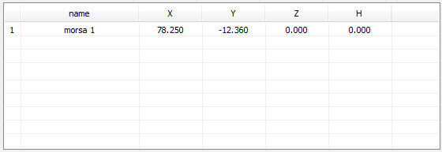

Posizioni iniziali aggiuntive
- Nell’albero delle Funzioni, fare doppio clic su “Assi”;
- fare doppio clic su “Altre posizioni iniziali”;

Si accede ad una lista nella quale possono essere memorizzate delle posizioni iniziali XYZ aggiuntive, ognuna associata ad un valore di spessore materiale H e individuata da un testo.
Per modificare una posizione:
- fare doppio clic sulla posizione name o XYZH da modificare.
- fare clic sul pulsante
 per acquisire dal CN la posizione corrente degli assi XY;
per acquisire dal CN la posizione corrente degli assi XY;
- fare clic sul pulsante per aggiungere una nuova riga alla lista;
- fare clic sul pulsante per eliminare dalla lista la riga selezionata;
- fare clic sul pulsante per inviare al CN la posizione iniziale selezionata; IMPORTANTE: un valore nullo non viene inviato!